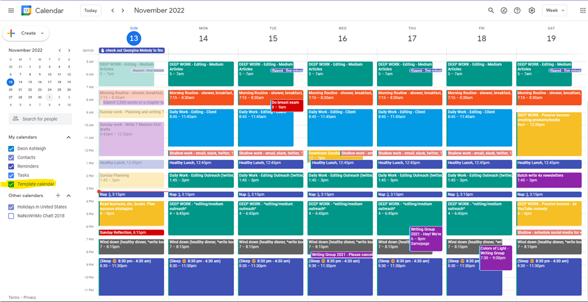

Google Calendar
.webp) Google Calendar ayuda a centralizar toda la programación personal, académica y laboral en un solo
lugar, permitiendo visualizar horarios y compromisos fácilmente.Además, ofrece integración con otras
herramientas de Google como Gmail y Google Meet, detectando automáticamente eventos como vuelos, citas
o reuniones.
Google Calendar ayuda a centralizar toda la programación personal, académica y laboral en un solo
lugar, permitiendo visualizar horarios y compromisos fácilmente.Además, ofrece integración con otras
herramientas de Google como Gmail y Google Meet, detectando automáticamente eventos como vuelos, citas
o reuniones. Es una de las herramientas de organización más utilizadas a nivel mundial.
¿Para qué sirve?
Google Calendar sirve para administrar y planificar actividades de manera eficiente. Se utiliza para:
- Programar reuniones.
- Crear horarios escolares.
- Organizar tareas.
- Agendar citas médicas.
- Planificar eventos familiares.
- Recordar fechas importantes.
- Coordinar equipos de trabajo.
- Programar clases virtuales.
También es útil para evitar olvidar actividades gracias a sus recordatorios automáticos.
Características
- Eventos programados.
- Recordatorios.
- Calendarios compartidos.
- Eventos repetitivos.
- Invitaciones.
- Integración con Gmail y Meet.

Ventajas
- Excelente organización.
- Recordatorios automáticos.
- Sincronización total.
Desventajas
- Puede saturarse.
- Algo complejo al inicio.